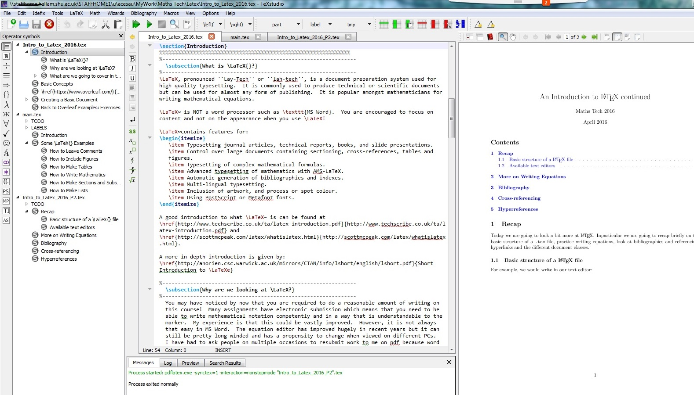

An Introduction to LaTeX
1 Introduction
1.1 What is LaTeX?
LaTeX, pronounced “Lay-Tech” or “lah-tech”, is a document preparation system used for high quality typesetting. It is commonly used to produce technical or scientific documents but can be used for almost any form of publishing. It is popular amongst mathematicians for writing mathematical equations.
LaTeX is NOT a word processor such as MS Word. You are encouraged to focus on content and not on the appearance when you use LaTeX!
LaTeX contains features for:
-
Typesetting journal articles, technical reports, books, and slide presentations.
-
Control over large documents containing sectioning, cross-references, tables and figures.
-
Typesetting of complex mathematical formulas.
-
Advanced typesetting of mathematics with AMS-LaTeX.
-
Automatic generation of bibliographies and indexes.
-
Multi-lingual typesetting.
-
Inclusion of artwork, and process or spot colour.
-
Using PostScript or Metafont fonts.
A good introduction to what LaTeX is can be found at
http://www.techscribe.co.uk/ta/latex-introduction.pdf
and
http://scottmcpeak.com/latex/whatislatex.html.
A more in-depth introduction is given by:
Short Introduction to
1.2 Why are we looking at LaTeX?
You may have noticed by now that you are required to do a reasonable amount of writing on this course! Many assignments have electronic submission which means that you need to be able to write mathematical notation competently and in a way that is understandable to the marker. My experience is that this could be vastly improved. However, it is not always that easy in MS Word. The equation editor has improved hugely in recent years but it can still be pretty long winded and has a propensity to change when viewed on different PCs. I have had to ask people on multiple occasions to resubmit work to me on pdf because Word has changed all of their equations to boxes or better still cocktail glasses! This does not happen using LaTeX.
The LaTeX language is also embedded into other programmes such as MATLAB - where terms such as \(\alpha , \beta , \gamma \) or whole equations can be written in titles for plots and so it is useful to be aware of the basics in writing simple mathematical equations.
1.3 What we will cover
LaTeX is going to be introduced to you so that you are familiar with the idea of a typesetting language and are able to give it a go yourself if you want to use something other than Word or another WYSIWYG (what you see is what you get) word processor.
We may not have enough time to cover everything in this session but these notes will provide you with enough to get started. We are going to look at an online tool for using LaTeX. The main topics that we are going to cover are:
-
Producing basic documents, inputting pictures and mathematical equations, producing lists etc..
-
Different types of documents that you can produce using LaTeX including ‘article’, ‘report’, ‘book’ and even ‘CV’ as well as slides and posters (‘beamer’).
-
Producing tables, systems of equations, matrices;
-
Inserting bibliographies and some basic formatting.
-
Using LaTeX at home and the different GUIs (Graphical User Interfaces) available.
1.4 Basic Concepts
LaTeX is used to create documents for others to read - just like you use Microsoft Word. That is where the similarities end however.
To prepare a LaTeX document you use a text editor (eg. Notepad) to edit a Latex source file which you save with the extension .tex. You then run the latex program to convert the source file to a document interchange format such as PDF. It can then be viewed on the screen, sent to other people, printed etc. LaTeX is an example of a Mark-Up language whereas MS Word is a WYSIWYG editor.
2 Creating a Basic Document
2.1 Overleaf.com
We are going to use an online Latex compiler called Overleaf. You will need to create an account with them to use it. It is free and serves as a good example of how to use Latex.
The advantage of using Overleaf at the moment is that it has numerous example files showing different things that you can do with LaTeX. It also has extensive help documents helping you with both overleaf and latex in general.
-
Go to Overleaf.com.
-
Create and account - click on Register (top right hand side).
-
To begin select
New Project, then selectblank projectand give the project a name of your choosing.
2.2 Page Structure
To create a simple document you need to first define what type or class of document you wish to create. For example, you may wish to create a shorter article, a longer report or an even longer book. This is done by defining the documentclass. These are predetermined packages that you call from the Latex documentation. You can also specify fontsize here - either 10pt (default), 11pt or 12pt. For example if you want a large fontsize you would write
\documentclass[12pt]{article}.
This, much like in .html language for webpages, forms the “head” of the document. The main “body” (that which is seen on your PDF document) is written in between the \begin{document} and \end{document} commands. A summary of this can be seen in Figure 1.
\documentclass{article}
\usepackage{package}
\title{An Introduction to \LaTeX{} continued}
\author{Maths Tech 2016}
\date{April 2016}
\begin{document}
\maketitle
\tableofcontents
\end{document}
You can add a title, author, date etc. in the preamble (before \begin{document}) and \maketitle after it. For example,
\documentclass{article}
\title{Title Here}
\author{Author Name Here}
\date{today}
\begin{document}
\maketitle
A warm welcome to the world of latex.
A \textbf{bold \textit{Hello \LaTeX}}
to start.
\end{document}
gives:
Note
That if you are writing this code in overleaf.com then the document automatically compiles and you will see it on the right hand screen.
2.3 Simple Mathematical Expressions
To add a maths expression in line with the current sentence, start this with \( and end it with \), like this:
The quadratic \(x^2+x-6=0\) has two roots.
To put a maths equation on its own line it’s very similar, but with different brackets: start with \[ and end with \], like this:
\[ \int_0^\pi sin(3x) dx\]
If you want a numbered equation, use \begin{equation} and \end{equation}, for example:
\begin{equation}
x^2+x-6
\end{equation}
For example, within the body of the text you may have:
If you want an equation written inline
then \(\frac{dy}{dx}=x^2 \Rightarrow
y=\frac{x^3}{3}+C\). However, if you want
a separate line then you have
\[\frac{dy}{dx}=x^2 \Rightarrow
y=\frac{x^3}{3}+C.\]
Furthermore, if you want that equation
to be numbered then you write
\begin{equation}
\frac{dy}{dx}=x^2 \Rightarrow
y=\frac{x^3}{3}+C
\end{equation}
which will give:
-
Write the above code into your LaTeX document on overleaf.
-
Add a new equation \( \frac{dy}{dx}=x^3+4 \Rightarrow y=\frac{x^4}{4}+4x+C_2 \).
-
Construct some equations of your own. You can use
A quick guide to latex.pdf
for some simple commands and symbols. This will be easier using a desktop version where mathematical symbols are listed on the left hand side of the screen
Note
that LaTeX may require specific packages (see Section 2.3) to show particular symbols. The name of that package is given in brackets in the top left hand window and can be inserted into your document by writing \usepackage{package name} in the preamble.
2.4 Sections and Lists
Headings and subheadings are an important part of your report writing. LaTeXdoes this very well. A basic structure could be given as:
\section{Main Heading}
\subsection{Subheading}
\subsubsection{Sub sub headings...}
which will give:
1 Main Heading
1.1 Subheading
Sub sub headings...
Just as you can have bullet points and ordered lists in word, you can also in LaTeX. This is achieved by using the following:
\begin{itemize}
\item Use itemize for bullet points
\end{itemize}
\begin{enumerate}
\item enumerate for an ordered list
\item counting...
\end{enumerate}
\begin{description}
\item[Descriptive] You could use
description if you are defining
things
\end{description}
which will give:
-
Use itemize for bullet points
-
enumerate for an ordered list
-
counting...
- Descriptive
You could use description if you are defining things
See https://www.overleaf.com/learn/latex/Lists for more on lists.
2.3 Classes and Packages
As well as classes, which determines the overall structure of the document there are a huge number of packages that we can use to enhance our document. These packages are wide ranging in their application from ones that improve the overall appearance of your document, to others that enable you to insert figures, hyperlinks or change fonts. To use these packages you need to specify them in the preamble (or head) - after the documentclass{} but before \begin{document} using \usepackage{package name}.
The following websites give a good overview of packages and how to use them:
-
Go back to the overleaf home page.
-
Click on “New Project” and select “Example Project.” In the box provided type in the name of your project - this will appear as the title of your document. Click on “Create.”
-
Change the title to “My first go at LaTeX” and the name to yours.
-
Can you identify how we put figures into Latex? Change the picture by uploading a new picture (Add Files... on top left of screen and selecting Upload from My Computer). Alternatively, see if you can find a picture of the solar system and add that to the document.
-
Add a new section to the file entitled “What I need to do” and write a list of all the things that you need to do before the beginning of the next Semester. This should be an ordered list.
-
Insert the following equation into your file. Note that the equation is numbered (Equation (1).
To do equations you will need to include
\usepackage{amsmath}in the preamble. -
Return to the home page and select “New Project” then “Homework Assignment” menu. From here you are given a number of example files. Have a look at these example files for different ideas about formatting your LaTeXfile.
Remember that Google is your friend and you can search for any LaTeX commands.
3 More on Writing Equations
One of the main reasons for showing you LaTeX is because of its ability to write equations in a consistent and efficient way. So how do you start? Recall that all commands begin with a “\”.
\begin{equation}
ax^2 + bx+c \quad \text{has solution} \quad x=\dfrac{-b\pm \sqrt{b^2-4ac}}{2a}
\end{equation}
gives:
Note that
- Fractions
Are given by
\frac{num}{den}or, if larger fraction required then\dfrac{num}{den}.- Text
We may wish to write some text. To do this we need to use
\text{}within the equation.- Space
To allow space between mathematical expressions we use
~, \quador\qquadfor larger space.
We may also wish to write systems of equations. For this it is advisable to use either \begin{eqnarray}\(\ldots \) \end{eqnarray} or
\begin{array}{number of colums: l-left, c-centre or r-right}
...
\end{array}.
Examples
Take the simultaneous equations:
\begin{equation}
\begin{array}{lll}
ax+bc &=& u \\
cx+dc &=& v \\
\end{array}
\end{equation}
giving:
Note
that the number of \(l's\) refers to the number of columns in the array (think of it like a table without lines), “&” is an alignment tab and “\\” is a newline.
You can also write it in matrix form:
\begin{equation}
\left[\begin{array}{cc}
a & b \\ c & d\\
\end{array}\right]
\left[
\begin{array}{cc}
x \\ y\\
\end{array}\right]=
\left[\begin{array}{cc}
u \\ v\\
\end{array}\right]
\end{equation}
http://latex.wikia.com/wiki/Matrix_environments
for more details. Your \(a\),\(b\) etc. could be replaced by Greek letters (see \(\lambda \) on left hand side of window in texstudio).
\begin{equation}
\begin{pmatrix}
\alpha & \beta \\ \gamma & \delta\\
\end{pmatrix}.
\begin{pmatrix}
x \\ y\\
\end{pmatrix}
\begin{pmatrix}
u \\ v\\
\end{pmatrix}
\end{equation}
\begin{table}\begin{equation}\nonumber
\begin{array}{|l|l|l|l|}
\hline
\textbf{Roots}& \textbf{Lambda} & \textbf{Discriminant} &
\textbf{General Solutions} \\
\hline
\text{Two real roots} & \lambda_1\neq \lambda_2 \in \mathbb{R} &
b^2-4ac>0 & x=A\mathrm{e}^{\lambda_1t}+B\mathrm{e}^{\lambda_2t}\\
\text{One repeated real root} & \lambda_1=\lambda_2=\lambda\in\mathbb{R} &
b^2-4ac=0 & x=\mathrm{e}^{\lambda t}(A+Bt)\\
\text{Two complex roots} & \lambda=p+iq & b^2-4ac<0 &
x=\mathrm{e}^{pt}(A\cos(qt)+B\sin(qt))\\
\hline
\end{array}
\end{equation}
\caption{Table as shown in Semester 2 Methods notes on ODEs.}\label{Tab_ODEs}
\end{table}
The above code can be used to give Table 1. Note here that in order to get the \(\mathbb {R}\) symbol you need to include \usepackage{amssymb}
in the preamble. Here \hline gives a horizontal line and \(| . |\) gives vertical lines between columns.
-
Write out the following equations:
-
\(3+\sqrt[3]{9}\)
-
\( \left[ \begin{array}{cc} u \\ v\\ w\\ \end{array}\right]=\left[ \begin{array}{ccc} x_{11} & x_{12} & x_{13} \\ x_{21} & x_{22} & x_{23} \\ x_{31} & x_{32} & x_{33} \\ \end{array}\right] \left[ \begin{array}{cc} x \\ y\\ z\\ \end{array}\right] \)
-
\(\dfrac {dx}{dt}=2x^3 \)
-
\( r_{k+2}=\lambda ^kr_{k+1}-(1-\lambda )r_k\)
- \[ y=\sum _{i=1}^{12} b_i^2 \]
-
\( \sin ^2(\phi )-\cos ^2(\phi )=-\cos (2\phi ),\quad \forall \phi \in [0,2\pi ) \)
-
\(\dfrac {dx}{dt}=f(t)\implies x(t)=\int _c^t f(u)du \)
-
\( \dfrac {d^2p}{dt^2}+3\dfrac {dp}{dr}-2p=\tan ^3(3t)\mbox{ for }t\geq 0\)
-
Construct a table with four columns titles Name, age, home town and favourite colour. Populate this table with people sat on your table.
If you are unsure ask or use Google (or any other search engine). Precede any searches with the word Latex.
4 Bibliography
There are many examples of how to create a bibliography on Overleaf.com. The basics are as follows:
-
You need to open a separate folder and save it as a name.bib file.
-
In the place that you want your bibliography you need to write the following code:
\addcontentsline{toc}{section}{References} \bibliographystyle{apalike} \bibliography{name}This should be included in the main body of the text.
-
The format of this file is slightly different. A typical entry depends on the format of the item you are referencing. A couple of examples are given as follows:
- Book
@Book{Dhillon, author = {Dhillon, S. and Kostrzewski, A.}, title = {Clinical Pharmacokinetics}, publisher = {Pharmaceutical Press}, year = {2006}, }- Article
@Article{Clewell:2008, author = {Clewell, H.J. and Reddy, M.B. and Lave, T. and Andersen, M.E. }, title ={Physiologically Based Pharmacokinetic Modelling}, journal = {Preclinical Development Handbook: ADME and Biopharmaceutical Properties}, year = {2008}, }- Website
@misc{BBCBitesize, author = {BBC Copyright}, title = {BBC Bitesize - Rates of reaction}, howpublished = {\url{http://www.bbc.co.uk/schools/gcsebitesize/science/ add_aqa/reaction/ratesrev1.shtml}}, note = {Accessed: 10-10-2015} }
Blank entries can be obtained from the Bibliography menu where a table is provided for you to fill in.
-
To cite any of these items you use the
\cite{}where the entry in the brackets is the first word after defining the type of reference. For example, if I wanted to reference Dhillon then I would write\cite{Dhillon}, [ Dhillon and Kostrzewski, 2006 ] . That reference is then pulled from the bibliography file and referenced where stated. The reference is only shown if it is cited. You can therefore keep one file for multiple assignments. -
In order to include the bibliography you need to run BibTex. On overleaf, this is done automatically. For offline versions of LaTeX, it may be necessary to run Bibtex and then compile. You may need to do it twice for it to compile correctly.
5 Cross Referencing
Key commands to enable you to cross reference your work are:
-
\label{Sec_bib}is used to label a particular equation, figure or section. -
\ref{Sec_bib}is used to reference that section, figure or equation. Most text editors keep track of these and give you a drop down list to choose from.
6 Different Types of Documents
Go to Overleaf.com and click on New Project. Scroll down the list and have a look at the different available templates. These give you a good overview of the range of possibilities that you have with LaTeX.
7 Some useful links
LaTeXhas some very good online communities. If you are unsure about something then Google it. Someone has, in all likelihood, had the same problem before and written a solution!
As an example of some help documents we have:
8 LaTeXoff-line
We have focused on the on-line compiler, www.Overleaf.com. This is useful to know about because they have a pretty good help function and also lots of example files! However, if you are writing a document then the need to be online and the relatively simple nature of the editor may be a little frustrating. As such it is useful to learn how to use a specific editor. You can access MikTeX (the means by which LaTeX is implemented) by clicking on the AppsAnywhere icon and searching for MikTex - Launch this. Upon running this a text editor is opened. This can be used but is not the most refined package - I advise then launching TeXstudio or TexMaker which are separate compiler apps. You will then be able to open a blank document and follow the instructions below.
If you are at home you can download MikTeX from http://miktex.org/. You will also need a compiler. There are many examples of these but some that I quite like (and which are also free) are TeX Studio (http://texstudio.sourceforge.net/) or TeXnicCenter (http://www.texniccenter.org/). For those of you with Macs then TeXstudio also has a mac friendly version and TexShop (http://pages.uoregon.edu/koch/texshop/) is pretty comprehensive and you don’t need MikTex:-).
There are many other text editors and it is a question of personal preference.

References
- [Dhillon and Kostrzewski, 2006]
Dhillon, S. and Kostrzewski, A. (2006). Clinical Pharmacokinetics. Pharmaceutical Press.